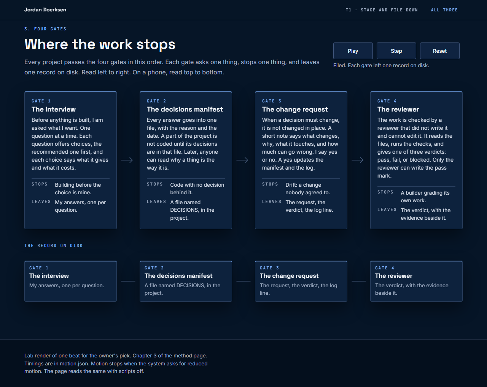
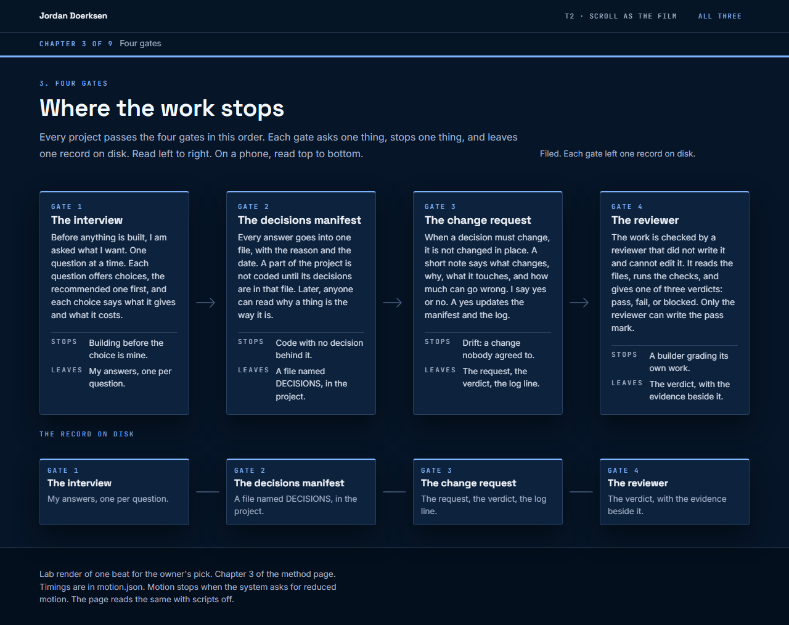
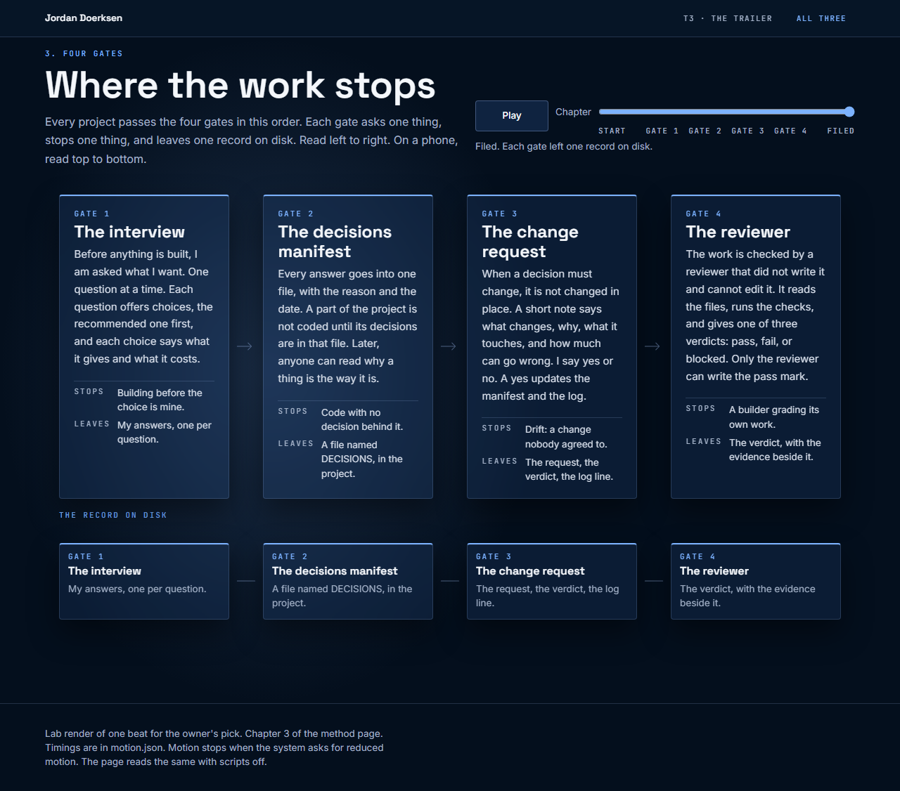

-
T1 Stage and file-down
- Gives
- The tested pattern with exact pacing: 2200 ms per gate, Play, Step and Reset in a fixed spot.
- Costs
- A timer drives it. A reader who scrolls on misses it until they press Play.

Reduced-motion still, 1280 wide. 390 wide -
T2 Scroll as the film
- Gives
- The reader sets the pace. Pausing is not scrolling. No timer at all, and the chapter rail shows progress.
- Costs
- The most engineering. A fast scroller sees the states snap.

Reduced-motion still, 1280 wide. 390 wide -
T3 The trailer
- Gives
- The most film. Larger type, one camera move per gate, a glow that answers each arrival, a chapter scrubber.
- Costs
- The longest entrance, and the risk the bible names: pacing frustrates the reader and spectacle buries the story. It pauses and never repeats.

Reduced-motion still, 1280 wide. 390 wide